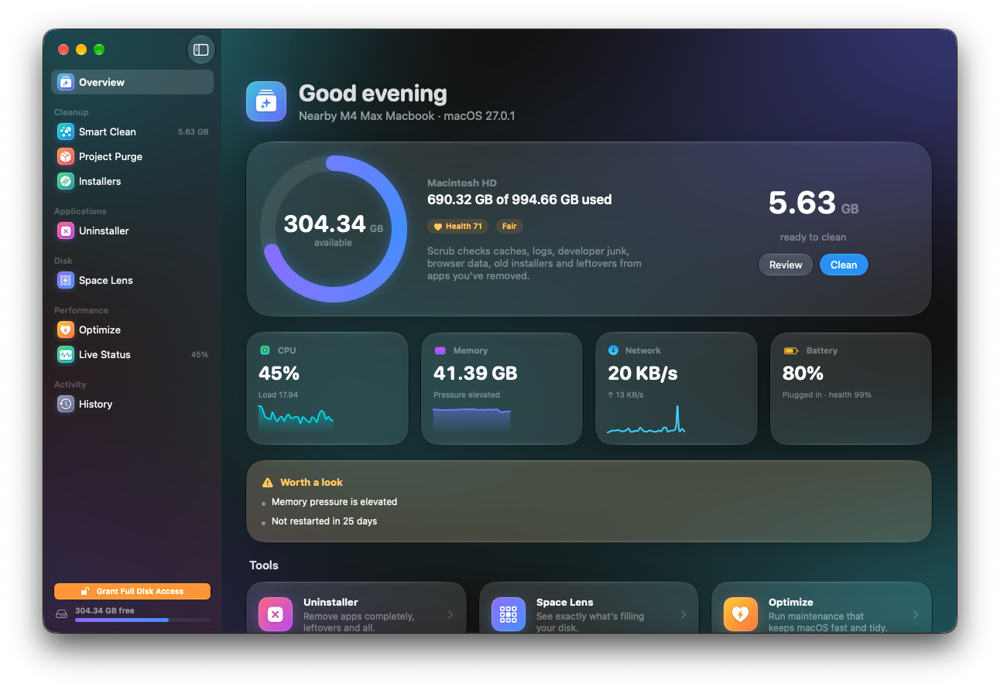
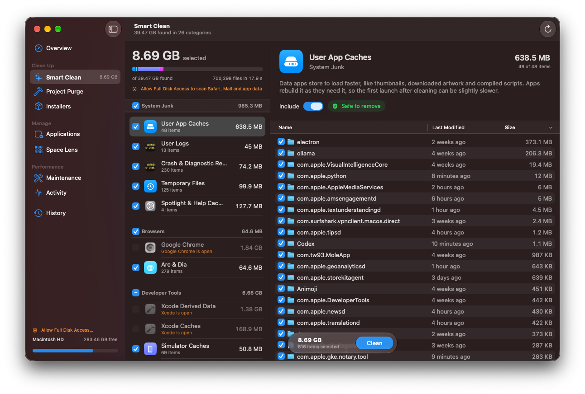
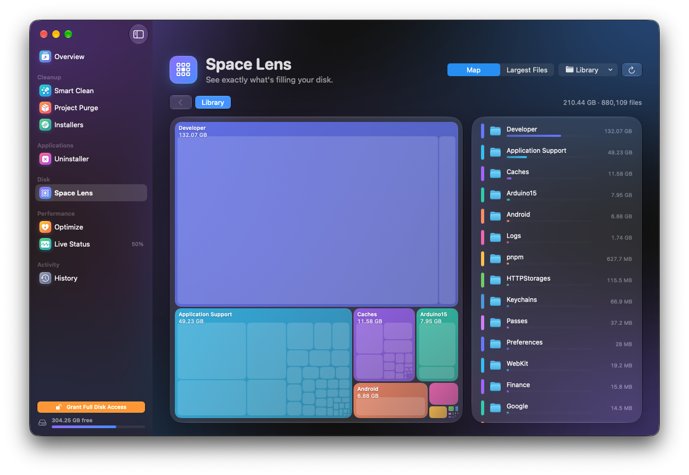
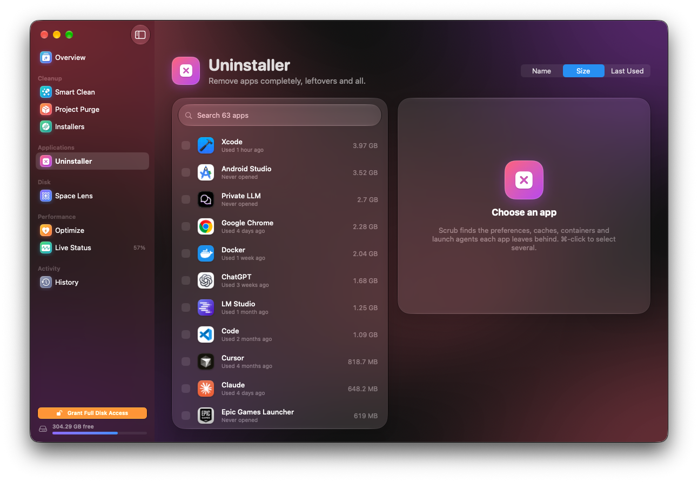
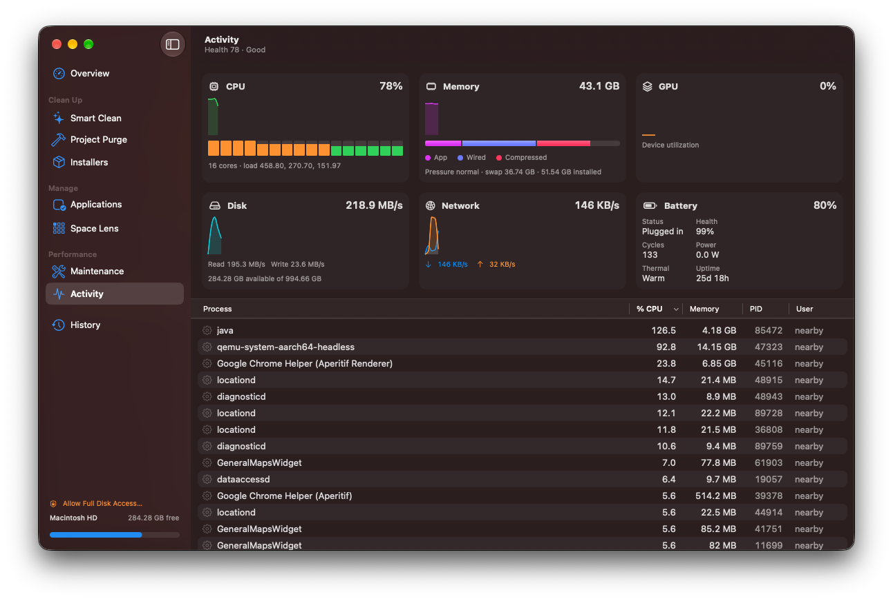
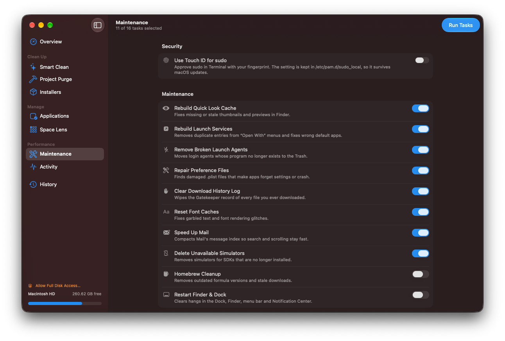
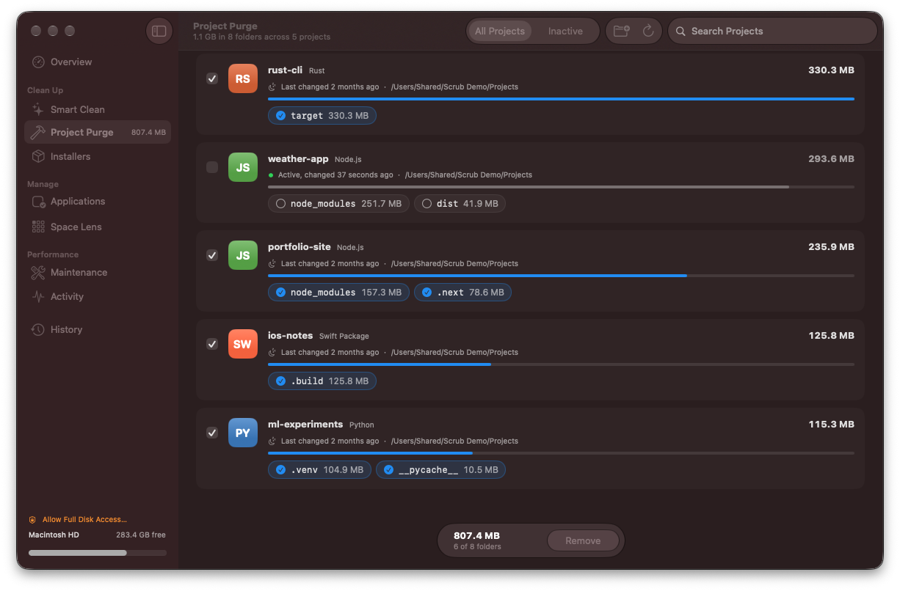

Smart Scan
A one-click overview of your Mac: disk usage ring, a system health score, and every reclaimable byte in a single pass.
Scrub is a native SwiftUI cleaner wrapped in Liquid Glass. Reclaim gigabytes of caches, app leftovers, and build junk — and see exactly what goes before anything does.
Everything the paid cleaners do, rebuilt as a fast, native Mac app — and the source is right there for you to read.
A one-click overview of your Mac: disk usage ring, a system health score, and every reclaimable byte in a single pass.
System and user caches, logs, chat app caches, Trash and old installers — plus the junk developers pile up. Caches of running apps are skipped automatically.
Removes apps and everything they leave behind — Application Support, Caches, Preferences, Containers, Launch Agents, Saved State, WebKit data, Cookies and more. All of it goes to the Trash.
An interactive treemap of your disk. Drill into folders, find the largest files, reveal in Finder or move to Trash.
Rebuild QuickLook, font and Launch Services caches, flush DNS, purge memory, thin Time Machine snapshots, remove broken launch agents and reindex Spotlight — with one admin prompt for the whole batch, or Touch ID for sudo.
Live CPU, memory pressure, disk, network, battery and thermal state, plus the top processes — each with its own sparkline.
Sweeps your project folders for stale build artifacts: node_modules, target, .build, dist, .next, DerivedData, __pycache__, venv, Pods and more.
Finds forgotten .dmg, .pkg, .iso, .xip and .zip installers hiding in Downloads and beyond.
Glanceable stats and quick actions from the menu bar, without opening the full window.
A log of every cleanup — what was removed, from where, and how much space it freed.
Standard sidebars, tables, inspectors and forms, with Liquid Glass where macOS uses it: toolbars, the sidebar and floating controls.







Cleaning a Mac should never feel like a gamble. Scrub shows its work, and it’s cautious where it counts.
One command in Terminal, or a classic drag-to-Applications download. Either way, it’s free.
Downloads the latest notarized release and installs Scrub in your Applications folder.
curl -fsSL https://raw.githubusercontent.com/nearbycoder/scrub/main/install.sh | bash
Prefer to look before you pipe? Read install.sh on GitHub.
Scrub is built to be conservative. It previews every item before removal, skips caches that belong to apps currently running, and honors a protected-paths whitelist it will never touch. Uninstalled apps and files you remove in Space Lens go to the Trash, and every cleanup is recorded in History.
Because Scrub is open source, you don’t have to take our word for it — the code that decides what to remove is on GitHub.
Yes. Releases are signed with a Developer ID certificate, checked by Apple’s notary service, and stapled with the notarization ticket, so Gatekeeper accepts them without warnings.
To check a copy yourself, run spctl -a -vv /Applications/Scrub.app. It should report source=Notarized Developer ID. You can also build Scrub yourself from source.
Only what you approve from the preview. The categories are regenerable or disposable data: system and user caches, logs, browser caches, developer caches (Xcode DerivedData, simulators, package manager caches), chat app caches, the Trash, old installers, leftovers from apps you uninstall, and project build artifacts like node_modules found by Purge.
Your documents, photos and other personal files aren’t part of any cleaning category. Space Lens only moves files you explicitly pick to the Trash.
Some maintenance tasks — like flushing DNS, rebuilding Launch Services or thinning Time Machine snapshots — need administrator rights. Scrub batches them so you only see one prompt per run, and you can turn on Touch ID for sudo to approve with your fingerprint.
Yes. Scrub is free and released under the MIT License — no subscription, no trial, no upsell. If it saves you some space, a star on GitHub is always appreciated.